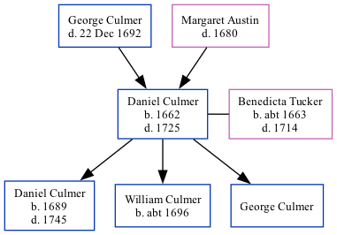

Daniel Culmer 1662 - 1725
[ Home ] | [ Calendar ] | [ Surnames Index ] | [ Family History ]The child of George Culmer and Margaret AustinDaniel Culmer, the 8 times great-grandfather of Nigel Horne, was born in Preston, Kent, England in 1662 and married Benedicta Tucker (with whom he had 3 children: Daniel, William and George) in Preston on Sep 19, 1683.
He died in 17251 and was buried in Stourmouth, Kent, England on Jan 25, 17251,2.
Parents
Children
- Daniel was born in 1689
- William was born c. 1696
Citations
- Kent, England, Tyler Index to Parish Registers, 1538-1874 Online publication - Provo, UT, USA: Ancestry.com Operations, Inc., 2010. This collection was indexed by Ancestry World Archives Project contributors.Original data - Frank Watt Tyler. The Tyler Collection. Canterbury, Kent, England: The Institute of Herald
- Kent, Canterbury Archdeaconry Burials - Findmypast
Media
Kent, Canterbury Archdeaconry burials - GBPRS/CANT/D/95509447
Family Tree
Generated by ged2site. Last updated on Nov 13, 2024